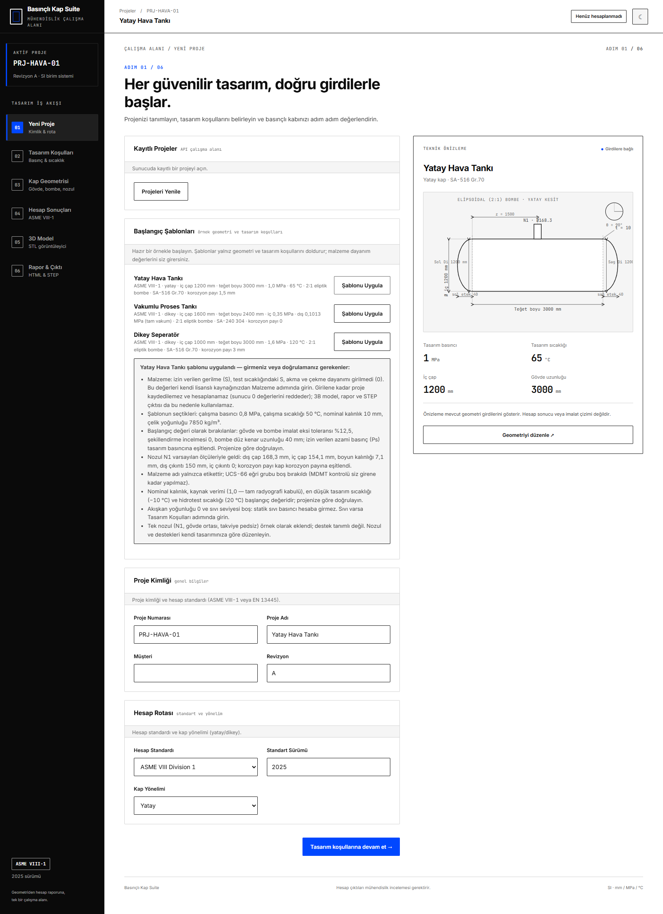
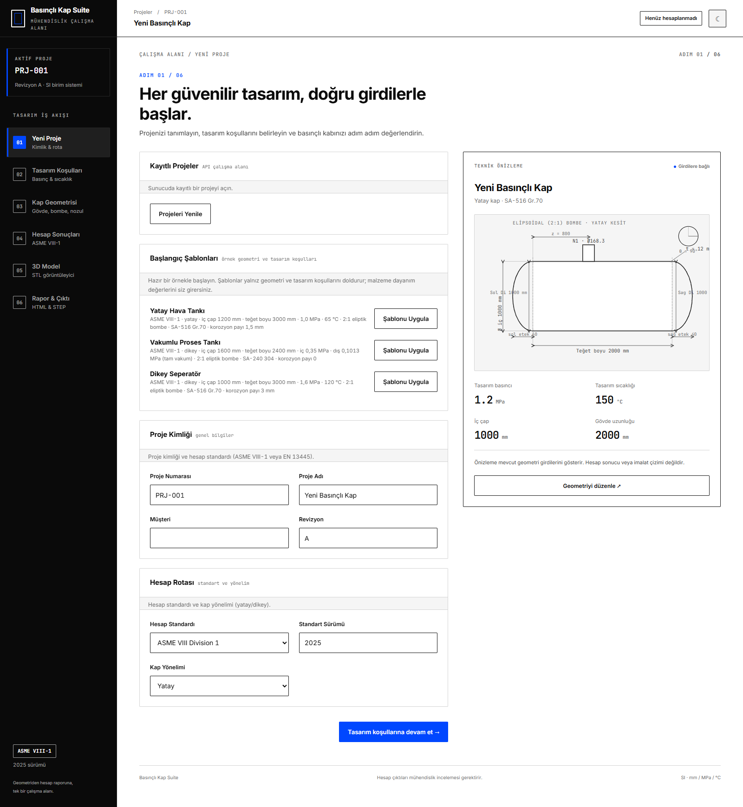
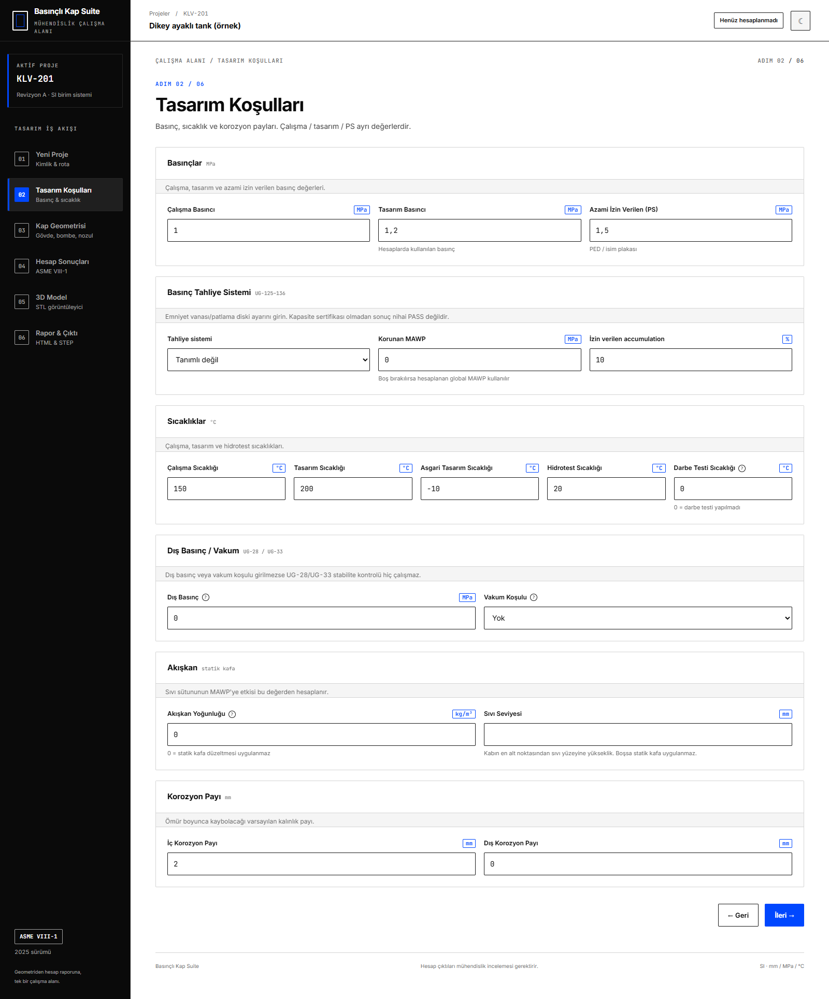
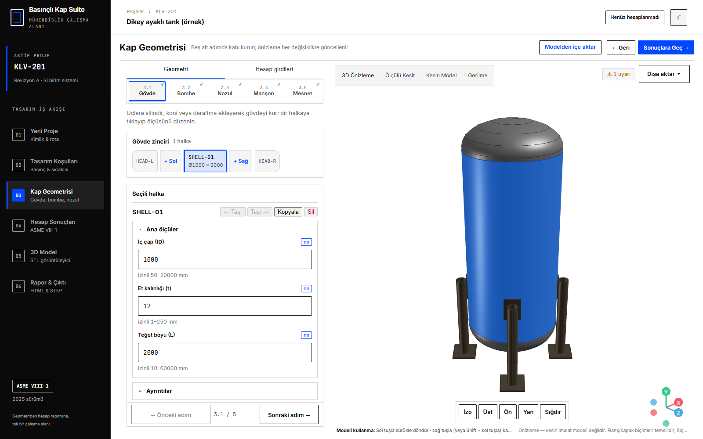
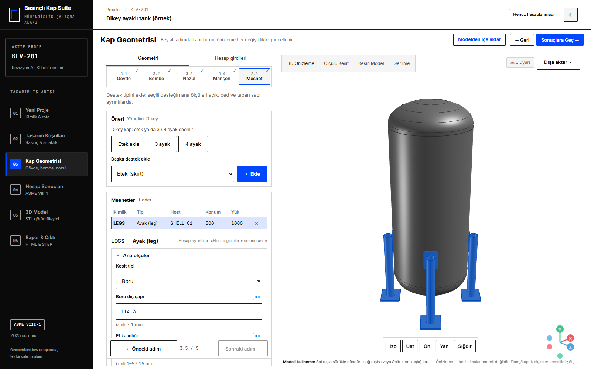
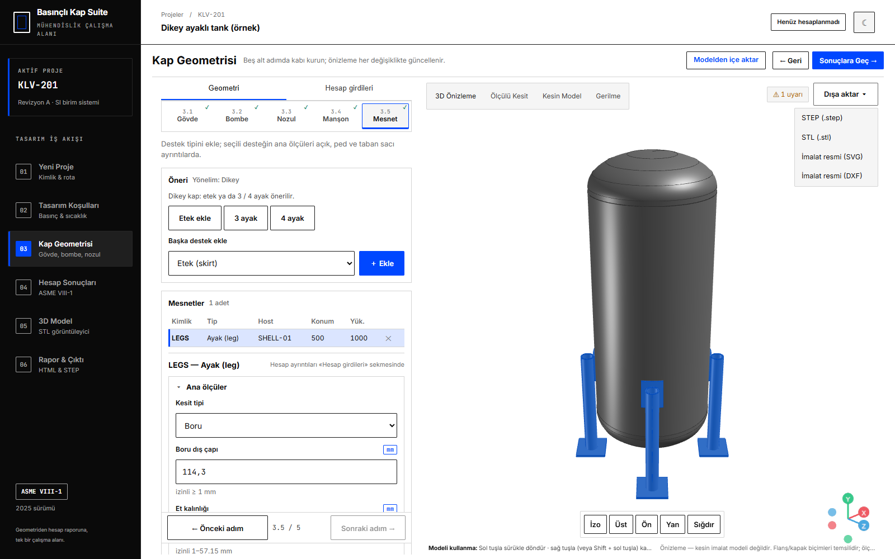
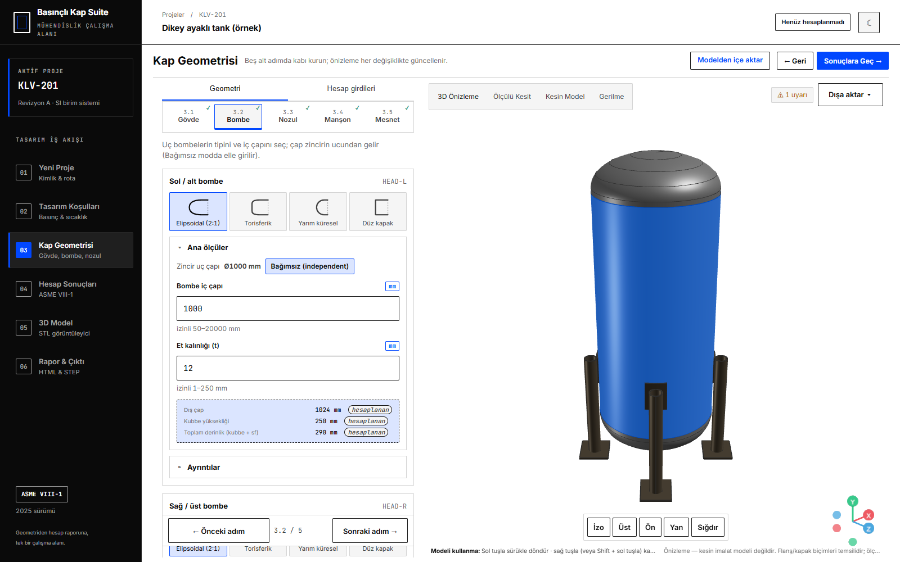

Bu ekran, yeni bir basınçlı kap (içinde atmosfer basıncından yüksek basınçta sıvı veya gaz tutan kapalı metal kap) hesaplama dosyası açmanızı veya daha önce çalıştığınız kayıtlı bir projeyi yüklemenizi sağlar. Projenin resmi takip kodlarını ve temel tanıtım bilgilerini belirleyebilir, dilerseniz hazır şablonlarla hızla tasarıma başlayabilirsiniz. Ayrıca kabın hangi uluslararası standarda göre hesaplanacağını ve sahada yatay mı yoksa dikey mi duracağını bu ilk adımda seçersiniz.
Kayıtlı Projeler
Daha önceden oluşturulmuş ve sistem hafızasına kaydedilmiş çalışmalarınızı geri yüklemek için bu paneli kullanabilirsiniz. Böylece yarım kalan bir tasarımı sürdürebilir veya mevcut hesaplar üzerinde inceleme ve güncelleme yapabilirsiniz.
Şekil: Kayıtlı projelerin listelendiği ve seçildiği ekran.
Proje aç
Daha önce sisteme kaydedilmiş projeleri listeleyen ve seçtiğiniz çalışmayı ekrana getiren açılır menüdür. Üzerinde çalışmak istediğiniz projeyi listeden seçtiğinizde projeye ait tüm geometrik ölçüler, malzeme seçimleri ve hesap parametreleri otomatik olarak yüklenir. Kaydedilmemiş yeni bir çalışma varken başka bir proje seçilirse önceki veriler kaybolabileceğinden, seçim yapmadan önce mevcut projenizi kaydetmeyi unutmayın.
Başlangıç Şablonları
Tüm ölçüleri sıfırdan girmek yerine endüstride yaygın olarak kullanılan standart kap tiplerini tek tıkla yükleyebilirsiniz. Başlangıç şablonları temel kap geometrisini ve çalışma şartlarını otomatik doldurarak hesaplama sürecinizi hızlandırır.

Şekil: Yatay hava tankı ve diğer hazır başlangıç şablonlarının seçildiği ekran.
Şablonu Uygula (düğme)
Seçtiğiniz hazır kap modelinin geometri ve tasarım şartlarını çalışma alanına aktaran düğmelerdir. Menüde üç farklı seçenek bulunur: Yatay Hava Tankı (kompresör sistemlerinde basınçlı hava depolamak için kullanılan standart yatay kap), Vakumlu Proses Tankı (içindeki hava boşaltılarak vakum uygulanan dikey kimyasal proses kabı) ve Dikey Seperatör (sıvı ve gaz fazlarını birbirinden ayrıştırmak için kullanılan dikey proses kabı). Bu şablonlar temel boyutları doldurur ancak malzeme dayanım değerlerini sıfır bırakır; bu nedenle malzeme değerlerini sertifikanızdan sizin girmeniz gerekir.
Proje Kimliği
Tasarlanan kabın kurumsal takibini, arşivlenmesini ve resmi raporlamasını sağlayan kimlik bilgileridir. Buraya yazacağınız bilgiler, programın oluşturacağı mühendislik hesap raporunun kapak ve başlık kısımlarında aynen yer alır.

Şekil: Proje kimlik bilgileri ve hesap rotası ayarları.
Proje Numarası
İşletmenizin veya müşterinizin bu tasarım işine verdiği benzersiz takip kodudur (örneğin PRJ-001 veya iş emri numarası). Projenin teknik arşivde kolayca bulunmasını ve diğer işlerle karışmamasını sağlar. Yanlış yazılması durumunda imalat, denetim ve kalite kontrol süreçlerinde evrak karışıklığı meydana gelebilir.
Proje Adı
Tasarımı yapılan kabın işlevini veya kullanım amacını belirten tanıtıcı isimdir (örneğin "Basınçlı Hava Depolama Tankı"). Proje listelerinde ve hesap raporlarında kabın doğrudan tanınmasını sağlar. Boş bırakılması veya yanıltıcı yazılması durumunda raporu inceleyen mühendisler kabın ne için yapıldığını anlayamaz.
Müşteri
Basınçlı kabın üretildiği alıcı kuruluşun, tesisin veya sipariş veren firmanın ticari unvanıdır. Resmi uygunluk belgelerinde ve teslimat evraklarında yasal muhatap bilgisini gösterir. Hatalı girilmesi teslim aşamasında kalite ve denetim raporlarının reddedilmesine neden olabilir.
Revizyon
Tasarım üzerinde yapılan değişikliklerin sırasını gösteren sürüm kodudur (örneğin ilk tasarım için "A", güncellemeler için "B" veya sayısal olarak "01"). Hangi hesaplama çıktısının en güncel olduğunu belirlemeye yarar. Güncellenmeyen revizyon numarası, atölyede eski ve geçersiz bir çizimin hatalı şekilde üretilmesine yol açabilir.
Hesap Rotası
Basınçlı kabın hangi uluslararası mühendislik standardına göre doğrulanacağını ve kabın duruş pozisyonunu belirler. Bu seçimler yazılımın arka planda işleteceği formülleri ve güvenlik katsayılarını doğrudan şekillendirir.
Hesap Standardı
Mukavemet (dayanım) hesaplamalarında uyulacak yasal tasarım kural kitabını belirler. ASME VIII Division 1 seçeneği dünya genelinde yaygın Amerikan Makine Mühendisleri Odası kazan ve basınçlı kap kurallarını uygular; EN 13445 seçeneği ise Avrupa Birliği basınçlı kap standardını esas alır. EN 13445 seçildiğinde bazı modüller için inceleme gerekli uyarısı görüntülenebilir.
Standart Sürümü
Tasarımda kullanılan standardın resmi yayım ve yürürlük yılını belirtir (örneğin 2025). Standartlar belirli aralıklarla güncellendiği için denetim kuruluşları hesapların hangi yılın kurallarına göre yapıldığını kontrol eder. Yanlış girilmesi denetimlerde raporun geçersiz sayılmasına sebep olabilir.
Kap Yönelimi
Kabın çalışma sahasındaki fiziksel duruşunu belirler; Yatay (zemine paralel yatan, genellikle eyer destekli) ve Dikey (zemine dik duran, genellikle ayak veya etek destekli) seçenekleri mevcuttur. Bu tercih, içindeki sıvının tabana uyguladığı hidrostatik basıncı ve rüzgar/deprem gibi devirici yük hesaplarını tamamen değiştirir. Yanlış seçilirse destek sistemi ve yük dağılımı baştan sona hatalı modellenir.
Adım 1 İçin Sık Yapılan Hatalar
Başlangıç şablonu seçildiğinde malzeme dayanım değerlerinin otomatik doldurulduğunu zannetmek; şablonlar bu değerleri sıfır bırakır, malzeme değerlerini mutlaka kendiniz girmelisiniz.
Kap yönelimini (Yatay/Dikey) baştan yanlış seçip sonradan geometri ve mesnet modellerini baştan düzenlemek zorunda kalmak.
Üzerinde çalışılan projeyi kaydetmeden listeden başka bir proje açarak girilen son verileri kaybetmek.
Adım 2 — Tasarım Koşulları
Bu adımda kabın maruz kalacağı iç ve dış basınçlar, çalışma sıcaklıkları, akışkan özellikleri ve korozyon payı belirlenir. Bu değerler kabın gövde ve bombe sac kalınlıklarının ne kadar olması gerektiğini doğrudan belirleyen en temel mühendislik girdileridir.
Basınçlar
Kabın güvenle çalışabilmesi için işletme şartlarında ve olağanüstü durumlarda maruz kalacağı basınç sınırları bu bölümde girilir. Mukavemet hesaplamaları doğrudan bu değerler üzerinden yürütülür.

Şekil: Basınçlar, sıcaklıklar, dış basınç ve korozyon payı tanımlama ekranı.
Çalışma Basıncı (MPa)
Kabın normal çalışma düzeninde sürekli maruz kaldığı akışkan basıncıdır (örneğin 1 MPa, yaklaşık 10 bar). Tesis işletme şartnamelerinden veya proses akış şemalarından alınır. Bu değer tasarım basıncından yüksek girilemez; aksi takdirde güvenlik sınırı kalmaz.
Tasarım Basıncı (MPa)
Kabın sac et kalınlığı hesaplarında doğrudan kullanılan ve çalışma basıncının üzerine güvenlik payı eklenerek belirlenen ana basınçtır (örneğin 1,2 MPa). Sipariş şartnamesinden temin edilir. Gerçek çalışma basıncından düşük girilirse saclar ince hesaplanır ve kabın işletmede yırtılma riski doğar.
Azami İzin Verilen (PS) (MPa)
Basınçlı Ekipmanlar Direktifi (PED) mevzuatı ve kabın tanıtım plakası için imalatçının taahhüt ettiği en üst basınç sınırıdır (örneğin 1,5 MPa). İmalatçı ve yetkili denetim kuruluşu tarafından kararlaştırılır. Tasarım basıncından küçük seçilemez; aksi halde yasal uygunluk testlerinden geçemez.
Basınç Tahliye Sistemi
Basınç tahliye sistemi, aşırı basınç artışı durumunda gaz veya sıvıyı kontrollü olarak dışarı atarak patlamayı engelleyen koruma donanımını tanımlar. Emniyet ventilinin veya patlama diskinin ayar basınçları burada belirlenir.
Şekil: Tahliye sistemi 'Etkin' seçildiğinde açılan ayar ve cihaz parametreleri.
Tahliye sistemi
Kap üzerinde aşırı basıncı önleyici bir güvenlik ekipmanının bulunup bulunmadığını belirtir; Tanımlı değil (tahliye cihazı hesaba katılmaz) ve Etkin (cihaz ayarları açılır) seçenekleri vardır. Etkin seçildiğinde emniyet vanası veya disk değerleri girilmelidir; yetkili üretici onaylı kapasite sertifikası olmadan hesaplama sonucu nihai emniyet onayı (PASS) sayılmaz.
Korunan MAWP (MPa)
Tahliye cihazının korumayı hedeflediği azami izin verilen çalışma basıncıdır (MAWP: kabın mevcut sac kalınlığıyla emniyetle taşıyabileceği en yüksek iç basınç). Sıfır bırakılırsa program tarafından hesaplanan en düşük parça MAWP değeri otomatik kullanılır. Kabın gücünden daha yüksek bir değer girilirse vana açılana kadar kap tehlikeli aşırı basınca maruz kalabilir.
İzin verilen accumulation (%)
Emniyet ventili tam tahliye yaparken sistem içinde izin verilen geçici basınç yükselme yüzdesidir (örneğin standart durumlarda tipik olarak %10). Tasarım kurallarından veya proses güvenlik raporlarından temin edilir. Çok yüksek seçilirse aşırı basınç anında kabın sınır değerleri aşılabilir.
Cihaz tipi (yalnız tahliye 'Etkin' iken görünür)
(Bu alan yalnız şu durumda görünür: Tahliye sistemi 'Etkin' olarak seçildiğinde açılır.) Basıncı tahliye etmek için kullanılan ekipmanın türünü belirtir; Emniyet vanası (aşırı basınçta açılıp basınç düşüşünde otomatik kapanan mekanik yaylı vana) ve Patlama diski (belirlenen basınçta yırtılarak tam boşalma sağlayan tek kullanımlık metal diyafram) seçenekleri bulunur. Seçilen tipe göre standart doğrulama kuralları işletilir.
Set / burst basıncı (yalnız 'Etkin' iken) (MPa)
(Bu alan yalnız şu durumda görünür: Tahliye sistemi 'Etkin' olarak seçildiğinde açılır.) Emniyet vanasının tahliyeye başladığı açma (set) basıncı veya patlama diskinin yırtıldığı (burst) nominal basınçtır; varsayılan olarak tasarım basıncına eşittir. Emniyet cihazının kalibrasyon sertifikasından alınır. Tasarım basıncının üzerinde ayarlanırsa vana açılana kadar gövde aşırı zorlanabilir.
Sıcaklıklar
Metallerin taşıma mukavemeti sıcaklıkla azalır, aşırı soğukta ise kırılganlaşır. Bu nedenle kabın çalışacağı, test edileceği ve tasarlanacağı sıcaklık sınırlarının doğru belirlenmesi hayati önem taşır.
Çalışma Sıcaklığı (°C)
Normal işletme esnasında kap içindeki akışkanın ulaştığı ortalama sıcaklıktır (örneğin 120 °C). Proses akış şemasından veya işletme kılavuzundan alınır. Tasarım sıcaklığından yüksek girilmemelidir.
Tasarım Sıcaklığı (°C)
Malzemenin izin verilen gerilme değerinin (S: malzemenin güvenle taşıyabileceği azami gerilme sınırı) standarda göre belirlenmesinde esas alınan en yüksek metal sıcaklığıdır (örneğin 150 °C). Tesis şartnamesinden temin edilir. Gerçek çalışma şartından düşük girilirse metal sıcakta yumuşayacağı için kap deforme olabilir.
Asgari Tasarım Sıcaklığı (°C)
Kabın basınç altındayken karşılaşabileceği en düşük metal sıcaklığıdır (MDMT: Minimum Design Metal Temperature, örneğin -10 °C). Kış iklim şartları veya ani gaz genleşmesinden doğan soğuma incelenerek belirlenir. Yüksek girilirse çeliğin soğukta cam gibi aniden kırılma (gevrek kırılma) riski gözden kaçar.
Hidrotest Sıcaklığı (°C)
İmalat bittikten sonra kap suyla doldurularak yapılan basınç dayanım testi sırasındaki su ve ortam sıcaklığıdır (örneğin 20 °C). Test prosedüründen alınır. Test suyunun aşırı soğuk olması çelikte ani çatlama riskini tetikleyebileceğinden standartlar genellikle belirli bir asgari test sıcaklığı şart koşar.
Darbe Testi Sıcaklığı (°C)
Çelik malzemeye Charpy V-çentik darbe testi (malzemenin tokluğunu ölçen kırılma testi) yapılmışsa bu testin gerçekleştirildiği sıcaklık değeridir (°C); 0 bırakılırsa darbe testi yapılmadığı kabul edilir. Malzemenin kalite kontrol sertifikasından (EN 10204 3.1) temin edilir. ASME UCS-66 kuralına göre malzemenin darbe testinden muaf olup olmadığını denetlemede kullanılır; yanlış girilirse zorunlu bir test atlanabilir.
Dış Basınç / Vakum
İnce cidarlı basınçlı kaplar dıştan gelen basınca veya iç vakuma karşı iç basınca kıyasla çok daha dayanıksızdır ve içe doğru çökme (burkulma) riski taşır. Bu bölüm dış basınç veya vakum tahkiklerini yönetir.
Şekil: Dış basınç giriş alanı ve yardım ipucu balonu.
Dış Basınç (MPa)
Kabın dış yüzeyine etki ederek gövdeyi içeriye doğru çökmeye zorlayan harici basınçtır; 0 bırakılırsa ASME UG-28 dış basınç tahkiki yapılmaz. Dış ceketli ısıtma/soğutma kaplarında ceket basıncından kaynaklanır. Gerçekte dış basınç varken 0 girilirse kap işletmede içe doğru ezilebilir.
Vakum Koşulu
Kap içinde atmosfer basıncının altında bir boşluk (vakum) oluşup oluşmayacağını belirtir; Yok ve Var seçenekleri mevcuttur. 'Var' seçildiğinde program otomatik olarak dıştan 0,1013 MPa (tam vakum) basınç uygulandığını kabul ederek UG-28 çökme kontrolünü devreye sokar. Vakum riski varken 'Yok' seçilirse içe çökme emniyeti denetlenemez.
Akışkan
Kap içindeki sıvının ağırlığı, özellikle yüksek dikey kapların alt kısımlarında ve taban bombelerinde ekstra bir basınç oluşturur (hidrostatik kafa). Bu bölüm sıvı özelliklerini tanımlar.
Akışkan Yoğunluğu (kg/m³)
Depolanan sıvının birim hacim ağırlığıdır (örneğin su için 1000 kg/m³); 0 bırakılırsa sıvı ağırlığı hesaba katılmaz. Kimyasal ürün güvenlik bilgi formundan (MSDS) alınır. Yoğun sıvılarda sıfır girilirse kabın tabanına binen ilave sıvı ağırlığı ihmal edilir ve alt kısımlar yetersiz kalınlıkta üretilir.
Sıvı Seviyesi (mm)
Kabın en alt iç teğet noktasından sıvının ulaştığı azami serbest yüzey yüksekliğidir; boş bırakılırsa sıvı basıncı düzeltmesi uygulanmaz. Seviye göstergesi veya proses dolum limitinden alınır. Dikey kaplarda tabandaki toplam basıncı doğrudan artırdığından gerçeğe uygun girilmelidir.
Korozyon Payı
Basınçlı kaplar zaman içinde temas ettikleri kimyasallar veya çevre şartları nedeniyle paslanır ve et kalınlığı incelir. Bu incelmeyi karşılamak için tasarım kalınlığına korozyon payı eklenir.
İç Korozyon Payı (mm)
İç korozyon payı, kimyasal akışkanın temas ettiği iç metal yüzeyinde kullanım ömrü boyunca aşınma ve paslanma ihtimaline karşı ilave edilen fazladan sac kalınlığıdır (örneğin karbon çeliği kaplarda sıklıkla 2 mm veya 3 mm). Proses korozyon raporundan veya müşteri şartnamesinden temin edilir. Yetersiz girilirse kap öngörülen ömrü dolmadan delinme tehlikesi yaşar.
Dış Korozyon Payı (mm)
Dış korozyon payı, kabın dış atmosferik şartlara, yağışa veya kimyasal buharlara maruz kalması durumunda dış yüzeyde oluşabilecek metal kaybı payıdır; kaliteli boya kaplaması veya paslanmaz çelik sac kullanıldığında genellikle 0 mm girilir. Çevre şartlarına ve yalıtım altı paslanma riskine göre belirlenir. Agresif açık hava tesislerinde sıfır bırakılırsa dış cidarda beklenmedik incelmeler doğabilir.
Adım 2 İçin Sık Yapılan Hatalar
Tasarım basıncını işletme (çalışma) basıncına eşit yazarak emniyet vanasının erken açılmasına veya sistemde hiç emniyet marjı kalmamasına yol açmak.
Buharla yıkanan veya tahliye sırasında içinde vakum oluşma riski taşıyan kaplarda 'Vakum Koşulu' seçeneğini 'Yok' bırakarak gövdenin içe çökme kontrolünü atlamak.
Ağır kimyasal depolayan yüksek dikey tanklarda sıvı seviyesi ve akışkan yoğunluğunu sıfır bırakarak taban bölgesindeki hidrostatik basınç payını ihmal etmek.
Adım 3 — Kap Geometrisi
Bu adımda basınçlı kabın fiziksel gövde zinciri, uç kapatma bombeleri, nozullar ve mesnetler modellenir. Ekranın solunda ölçü formları yer alırken sağında canlı 3B model, ölçülü kesit ve gerilme dağılımı anlık olarak görüntülenir.
Üst Çubuk ve Panel Sekmesi
Ekranın en üstünde harici CAD modeli yükleme seçenekleri, panel sekmesinde ise temel geometri ile detaylı hesap girdileri arasında geçiş düğmeleri yer alır.

Şekil: Adım 3 ana ekranı, üst çubuk ve geometri formu.Şekil: Geometri ve Hesap Girdileri sekmeleri.
Modelden içe aktar (dosya seç)
(Bu alan yalnız şu durumda görünür: Harici bir CAD dosyasından kap geometrisi yüklenmek istendiğinde kullanılır.) *.step, *.stp veya *.stl uzantılı harici 3B çizim dosyalarını programa aktaran dosya seçicidir. Yüklenen STL dosyaları yalnızca görsel referans amacıyla 3B ekranda gösterilir ve mukavemet hesaplarına dahil edilmez; STEP dosyalarında ise akıllı tanıma penceresi açılarak bulunan çap ve boy ölçüleri onay kutularıyla projeye aktarılabilir.
Geometri / Hesap girdileri
Gövde, bombe ve nozul gibi ana ölçü formları ile WRC dış yükleri, flanş, cıvata ve malzeme detaylarının bulunduğu akordeon menüler arasında geçiş sağlayan panel sekmesidir. Geometri sekmesi temel boyutlandırmayı yönetirken, Hesap girdileri sekmesi ASME ek modül parametrelerini açar. İlgili parametreleri düzenlemek için doğru sekmenin aktif olduğundan emin olunmalıdır.
Önizleme ve Görselleştirme
Tasarımı yapılan kabın üç boyutlu katı modelini, ölçülendirilmiş iki boyutlu teknik kesitini ve basınç altındaki renkli gerilme dağılımını canlı olarak inceleyebilirsiniz.

Şekil: Canlı 3D model önizlemesi ve kamera kontrolleri.Şekil: Gerilme sekmesi ve analitik/FEA gerilme dağılımı haritası.

Şekil: 3D model ve çizim dışa aktarma menüsü.
Önizleme görünümü
Görselleştirme penceresinin çalışma modunu belirler; 3D Önizleme (etkileşimli katı model), Ölçülü Kesit (ana eksen ve boyutları gösteren 2B teknik şema), Kesin Model (tam detaylı CAD modeli), Gerilme (iç basınç altındaki gerilme dağılımı haritası) ve dosya yüklenmişse Yüklenen model seçenekleri sunulur. Nozulların ve mesnetlerin birbirine çakışıp çakışmadığını bu modlar üzerinden görsel olarak denetleyebilirsiniz.
Gerilme kaynağı (Gerilme sekmesinde)
Gerilme haritasının hangi yöntemle hesaplanacağını belirler; Analitik (formüllere dayalı klasik ASME kabuk gerilmeleri) ve FEA (sonlu elemanlar yöntemiyle sayısal gerilme analizi) seçenekleri bulunur. Bu sekmedeki renkli gerilme dağılımları mühendise fikir verme amaçlı göstergedir; tek başına resmi ASME kod onayı yerine geçmez.
SCL eşdeğer gerilme (FEA çalışınca)
(Bu alan yalnız şu durumda görünür: Gerilme görünümünde FEA yöntemi çalıştırıldığında ve gerilme sınıflandırma çizgisi - SCL tanımlandığında görünür.) Gerilme yoğunlaşmalarını değerlendirmede esas alınacak akma kriterini belirler; von Mises (şekil değiştirme enerjisi hipotezi) veya Tresca (azami kayma gerilmesi hipotezi) seçenekleri mevcuttur. Yanlış kriter seçimi malzemenin plastik deformasyona yaklaşma payını farklı yorumlamanıza neden olabilir.
Dışa aktar menüsü
(Bu alan yalnız şu durumda görünür: Önizleme ekranındaki dışa aktar menüsü tıklandığında açılır.) Oluşturulan 3B modeli veya imalat çizimlerini harici yazılımlara aktarmak için kullanılan menüdür. STEP, STL ve imalat çizimleri için DXF/SVG formatlarında dışa aktarma imkanı tanır. İmalat atölyesine veya CAD departmanına veri iletmek için kullanılır.
3.1 Gövde Zinciri
Gövde zinciri, basınçlı kabın silindirik veya konik gövde parçalarını uç uca bağlayarak ana silindiri kurmanızı sağlar. Tek veya farklı çaplardaki birden fazla gövde halkası bu şerit üzerinden yönetilir.
Şekil: Seçili silindirik gövde halkasının ana ölçüleri ve ayrıntılar formu.Şekil: Gövde zincirine yeni silindir veya koni ekleme paneli.
Zincir halkası seçimi (şerit)
Gövdeyi meydana getiren parçalardan hangisinin aktif olduğunu gösteren seçim şerididir (örneğin SHELL-01, SHELL-02 veya koni halkaları). Ölçülerini değiştirmek istediğiniz halkanın üzerine tıklayarak veya 3D modelde parçayı seçerek düzenleme formunu açabilirsiniz. Yanlış halka seçilirse istenmeyen parçanın boyutları değiştirilebilir.
Eklenecek parça
Gövde zincirinin sağına veya soluna yeni bir parça eklerken geometrik formunu belirler; Silindir (aynı veya farklı çapta düz gövde), Koni (çap geçişini sağlayan konik gövde) ve Daralt + Silindir (önce konik geçiş ardından daha dar silindirik gövde) seçenekleri bulunur. Proses gereksinimine göre kabın kademeli çap yapısını kurmanızı sağlar.
Uç çapı (Koni, Daralt) (mm)
Eklenen konik parçanın dar veya genişleyen diğer ucunun iç çapıdır (izin verilen aralık 50 mm ile 20000 mm arasıdır; varsayılan olarak bağlı olduğu ucun %60'ı alınır). Tasarım projesindeki çap geçişi ölçüsünden alınır. Komşu gövdeyle aynı çap girilemez çünkü koni oluşturmak için iki ucun farklı çapta olması şarttır.
Koni boyu (Koni, Daralt) (mm)
Konik geçiş parçasının eksenel teğet uzunluğudur (izin verilen sınır 10 mm ile 30000 mm arasıdır, varsayılan 500 mm). İmalat resminden alınır. Koni boyunun çapa oranına göre hesaplanan yarı tepe açısı α 30°'yi aşarsa sistem kırmızı uyarı verir ve özel takviye hesabı gerektirir.
Teğet boyu / Yeni silindir boyu (mm)
Gövde zincirine eklenen yeni silindirik parçanın düz dikiş boyudur (izin verilen aralık 10 mm ile 60000 mm arasıdır, varsayılan 1000 mm). Tankın toplam hacim ve boy gereksinimine göre belirlenir. Yanlış boy girilmesi kabın kapasitesini ve rüzgar/deprem momentlerini doğrudan saptırır.
Et kalınlığı (Silindir, Koni) (mm)
Yeni eklenen gövde veya koni halkasının başlangıç sac et kalınlığıdır (izin verilen aralık 1 mm ile 250 mm arasıdır; varsayılan komşu halkanın kalınlığıdır). Sac levha standart kalınlıklarından seçilir. Gerekli asgari kalınlığın altında bir değer girilirse hesaplama sonucunda parça basıncı taşıyamaz ve FAIL verir.
Düğme: ← Taşı
Seçili gövde halkasını zincir içerisinde bir basamak sola (veya dikey kapta aşağıya) kaydıran işlem düğmesidir. Gövde sırasını değiştirmek için kullanılır; zincirde en az 3 eleman bulunması durumunda çalışır.
Düğme: Taşı →
Seçili gövde halkasını zincir içerisinde bir basamak sağa (veya dikey kapta yukarıya) kaydıran işlem düğmesidir. Kademeli çapa sahip kaplarda parçaların dizilimini ayarlamayı sağlar.
Düğme: Kopyala
Seçili halkanın tüm boyut, malzeme ve kaynak özelliklerini birebir kopyalayarak hemen yanına yeni bir halka ekleyen düğmedir. Birbirinin aynı çoklu gövde saclarını hızlıca oluşturmada büyük kolaylık sağlar.
Düğme: Sil
Seçili olan gövde veya koni parçasını zincirden kaldıran düğmedir. Sistemde en az bir gövde halkasının bulunması zorunlu olduğundan, son kalan gövde parçası silinemez.
İç çap (ID) (mm)
Silindirik gövde halkasının korozyonsuz temiz iç çapıdır (izin verilen sınır 50 mm ile 20000 mm arasıdır, varsayılan 1000 mm). Proses hacim tasarımından veya boru/sac standartlarından alınır. Çap büyüdükçe sac üzerindeki çeper gerilmesi doğrusal olarak artacağından et kalınlığı ihtiyacı da doğrudan artar.
Et kalınlığı (t) (mm)
Silindirik gövde parçasının imalatta kullanılacak nominal sac et kalınlığıdır (izin verilen aralık 1 mm ile 250 mm arasıdır, varsayılan 12 mm). Çelik sac üretici kataloglarından temin edilir. Bu değer korozyon payı ve sac toleransı düşüldükten sonra hesaplanan asgari kalınlığın (t_min) altına inerse hesaplama onaylanmaz.
Teğet boyu (L) (mm)
Silindirik halkanın iki kaynak çizgisi arasındaki net boyudur (izin verilen aralık 10 mm ile 60000 mm arasıdır, varsayılan 2000 mm). Genel yerleşim planından alınır. Dış basınç altındaki kaplarda burkulma boyunu doğrudan belirlediğinden kritik öneme sahiptir.
Büyük çap (mm)
(Bu alan yalnız şu durumda görünür: Gövde zincirinde konik bir halka seçildiğinde ana ölçüler panelinde görünür.) Konik parçanın geniş olan tabanının iç çapıdır (izin verilen aralık 50 mm ile 20000 mm arasıdır). Bağlı olduğu geniş silindirin çapına uygun seçilmelidir; uyumsuz değer girilirse montaj birleşiminde geometrik süreksizlik oluşur.
Küçük çap (mm)
(Bu alan yalnız şu durumda görünür: Gövde zincirinde konik bir halka seçildiğinde ana ölçüler panelinde görünür.) Konik parçanın dar olan tepe ucunun iç çapıdır (izin verilen sınır 50 mm ile büyük çap eksi 1 mm arasıdır). Proses akış veya borulama çapına göre belirlenir. Büyük çapa eşit veya büyük girilmesine sistem izin vermez.
Boy (mm)
(Bu alan yalnız şu durumda görünür: Gövde zincirinde konik bir halka seçildiğinde ana ölçüler panelinde görünür.) Konik halkanın iki ucu arasındaki eksenel uzunluğudur (izin verilen aralık 10 mm ile 30000 mm arasıdır). İmalat projesinden alınır. Boy kısaldıkça koninin koniklik açısı büyüyeceğinden birleşim bölgelerinde aşırı eğilme gerilmeleri doğar.
Et kalınlığı (t) (mm)
(Bu alan yalnız şu durumda görünür: Gövde zincirinde konik bir halka seçildiğinde ana ölçüler panelinde görünür.) Konik geçiş parçasının nominal sac et kalınlığıdır (izin verilen sınır 1 mm ile 250 mm arasıdır). Konilerde gerilme silindire göre 1/cos(α) oranında arttığından genellikle komşu silindirden daha kalın sac seçilmesi gerekir.
Yarı tepe açısı α (°)
(Bu alan yalnız şu durumda görünür: Gövde zincirinde konik bir halka seçildiğinde salt okunur olarak görünür.) Koninin ekseni ile cidarı arasındaki yarım açıdır (büyük çap, küçük çap ve boydan otomatik türetilir). Açının 30°'yi aşması durumunda ASME kurallarına göre özel birleşim analizi (torikonik geçiş veya takviye halkası) gerekir; 60°'yi aşması durumunda ise ASME Appendix 1-8 kapsamından çıkar ve standart dışı kabul edilir.
Malzeme
İlgili gövde halkasının imal edileceği metal alaşımını belirleyen açılır listedir (örneğin MAT-01: SA-516 Gr. 70 veya paslanmaz çelik). Projenin Malzeme sekmesinde tanımlanan kartlardan seçilir. Yanlış malzeme seçimi sıcaklığa bağlı izin verilen gerilmeyi (S) değiştireceğinden tüm dayanım hesaplarını geçersiz kılar.
İç korozyon payı (mm)
Bu gövde parçasına özel olarak uygulanacak iç yüzey paslanma ve aşınma payıdır (varsayılan 2 mm). Genellikle Adım 2'deki genel korozyon payı ile aynı tutulur ancak kabın farklı bölgelerinde farklı korozyon bekleniyorsa bağımsız değiştirilebilir. Yetersiz girilirse kabın ömrü kısalır.
Sac toleransı (%)
Haddelenmiş çelik sacın imalat standardından kaynaklanan eksi kalınlık tolerans yüzdesidir (örneğin plaka saclar için yaygın olarak %12,5 veya borularda standart değerler). Çelik üreticisi şartnamesinden veya malzeme standardından alınır. Sac toleransı nominal kalınlıktan düşülerek hesap yapıldığından bu değerin girilmesi zorunlu bir güvenlik adımıdır.
Kaynak birleşimi
Gövde halkasının boyuna dikişinde kullanılan kaynak tipini ve radyografik muayene (NDT: tahribatsız test yöntemi) kalitesini belirten kaynak kartı seçimidir (örneğin WJ-01). Kaynak verimi faktörünü (E: tam röntgenli kaynakta 1,0; noktasal röntgende 0,85; muayenesiz kaynakta 0,70) doğrudan belirler. Kaynak kalitesi düşükken yüksek bir katsayı seçilirse kaynak dikişinden yırtılma riski doğar.
UG-28 A faktörü
ASME Section II Part D Subpart 3 tablolarından silindirin boy/çap ve çap/kalınlık oranına göre okunan boyutsuz gerinim katsayısıdır; 0 bırakılırsa dış basınç ve vakum hesabı bloke edilir. Malzemenin burkulma eğrilerinden elde edilir (bu değeri standart tablolardan kullanıcının kendisi bulup girmelidir). Yanlış girilirse kabın vakum altındaki çökme emniyeti belirlenemez.
UG-28 B faktörü (MPa)
A faktörü ve tasarım sıcaklığı kullanılarak malzemenin dış basınç tablosundan okunan izin verilen basma gerilmesidir; 0 bırakılırsa dış basınç hesabı tamamlanamaz. Standart malzeme diyagramlarından alınır (kullanıcı standarttan temin etmelidir). Kabın izin verilen harici çalışma basıncını doğrudan belirler.
3.2 Bombeler
Bombeler, silindirik gövdenin iki ucunu emniyetle kapatan derin kavisli veya düz kapaklardır. Basınç altında iç gerilmelerin en yoğunlaştığı bölgeler olduğundan geometrik formları büyük dikkat gerektirir.

Şekil: Sol/alt ve sağ/üst bombe seçim kartları ve bombe tipleri.Şekil: Bombe formu, çap ilişkisi, et kalınlığı ve ayrıntılar paneli.
Bombe tipi
Uç kapatma kapağının geometrik kesitini belirler; Elipsoidal (2:1) (derinliği çapın dörtte biri olan ve en sık kullanılan mukavim bombe), Torisferik (küre kubbeli ve mafsal kıvrımlı bombe, Klöpper/Korbogen), Yarım küresel (iç basınca en dayanıklı tam yarım küre bombe) ve Düz kapak (flanşlı veya kaynaklı kalın düz plaka) seçenekleri yer alır. Seçilen tip basınç gerilme formüllerini ve gerekli et kalınlığını tamamen değiştirir.
Çap ilişkisi
Bombe çapının gövde zincirine nasıl bağlanacağını belirler; Bağlı (linked) seçildiğinde bombe iç çapı komşu gövde halkasının çapından otomatik olarak alınır ve kilitlenir; Bağımsız (independent) seçildiğinde ise bombe çapı elle serbestçe girilebilir. Bağımsız seçilip gövde ucuyla farklı bir çap yazılırsa sistem montaj hatası uyarısı verir.
Bombe iç çapı (mm)
Bombenin etek kısmının temiz iç çapıdır (izin verilen sınır 50 mm ile 20000 mm arasıdır; 'Bağlı' iken salt-okunurdur). Gövde çapına eşit olması beklenir. Bağımsız modda komşu gövde ucundan farklı girilirse iki parçanın birbirine kaynatılamayacağı gerekçesiyle kırmızı hata uyarısı görüntülenir.
Et kalınlığı (t) (mm)
Bombenin imal edileceği sacın başlangıç nominal kalınlığıdır (izin verilen aralık 1 mm ile 250 mm arasıdır, varsayılan 12 mm). Bombe basma (presleme/sıvama) işlemi sırasında saçta incelme olacağından sipariş kalınlığı bu pay düşünülerek seçilmelidir. Hesaplanan asgari bombe kalınlığından düşük girilirse mukavemet onayı verilmez.
Düz flanş boyu (sf) (mm)
Bombenin kıvrım bittiği noktadan kaynak ağzına kadar olan düz silindirik uzantı boyudur (izin verilen aralık 0 mm ile 500 mm arasıdır, varsayılan 40 mm). Bombe pres imalat standartlarından (DIN 28011/28013 veya ASME) alınır. Düz flanş payı yetersiz bırakılırsa gövdeye kaynak yapılırken bombe kıvrım bölgesindeki gerilmeler kaynak dikişiyle çakışır ve çatlama riski artar.
Kubbe derinliği (h) (mm)
Elipsoidal bombelerde düz flanş hariç iç kavisin merkezdeki derinliğidir (0 girilirse veya bırakılırsa standart 2:1 oranı olan h = Di / 4 değeri otomatik kullanılır). Özel basılmış sığ veya derin elips bombelerde imalatçı çiziminden alınır. Yanlış girilmesi bombe tepe gerilme katsayısını (K faktörü) değiştirir.
Taç yarıçapı (R) (mm)
(Bu alan yalnız şu durumda görünür: Bombe tipi Torisferik olarak seçildiğinde görünür.) Torisferik bombenin merkezindeki geniş küresel kubbenin iç yarıçapıdır (0 bırakılırsa standart Klöpper kuralı olan R = Di otomatik kabul edilir). Bombe üreticisinin teknik resminden alınır. Standart dışı büyük girilirse taç bölgesinde izin verilen basınca ulaşılması zorlaşır.
Mafsal yarıçapı (r) (mm)
(Bu alan yalnız şu durumda görünür: Bombe tipi Torisferik olarak seçildiğinde görünür.) Torisferik bombenin silindirik flanşa bağlandığı kıvrık köşe bölgesinin iç kavis yarıçapıdır (0 bırakılırsa standart kural olan r = 0,06 · Di değeri kullanılır). ASME kuralına göre mafsal yarıçapı iç çapın en az %6'sından ve et kalınlığının 3 katından küçük olamaz; aksi takdirde köşede aşırı gerilme birikmesi ve yırtılma oluşur.
Düz kapak C katsayısı (UG-34)
(Bu alan yalnız şu durumda görünür: Bombe tipi Düz kapak olarak seçildiğinde görünür.) ASME UG-34 standardında düz kapağın gövdeye kaynak veya cıvatayla bağlanma şekline göre tanımlanan boyutsuz montaj katsayısıdır (0 bırakılırsa hesaplama yapılmaz). ASME Tablo UG-34'teki birleşim detaylarından (örneğin bindirmeli kaynak, alın kaynağı vb.) kullanıcı tarafından bulunup girilmelidir. Yanlış katsayı düz kapağın eğilme mukavemetini hatalı hesaplatır.
Düz kapak C katsayısı (EN 13445-3 Md.10)
(Bu alan yalnız şu durumda görünür: Bombe tipi Düz kapak ve standart EN 13445 olarak seçildiğinde görünür.) EN 13445-3 Madde 10 kapsamında düz kapağın mesnetlenme geometrisini temsil eden katsayıdır; 0 girilirse EN hesabı bloke edilir. Bu katsayı ASME UG-34'teki C değeri ile aynı değildir ve EN standardındaki ilgili tablodan kullanıcı tarafından alınmalıdır.
Malzeme
Bombenin imal edileceği çelik sac alaşımını belirleyen seçimdir (örneğin MAT-01). Projenin Malzeme listesinden atanır. Bombe gövdeyle aynı veya farklı alaşımdan yapılabilir; doğru seçilmezse sıcaklığa bağlı emniyet gerilmesi hatalı işlenir.
Kaynak birleşimi
Bombe parçalı (dilimli / petal) preslenmişse üzerindeki kaynak dikişlerinin muayene kalitesini veya bombenin yekpareliğini temsil eden kaynak tanımıdır (örneğin WJ-01 veya yekpare dikişsiz ise — yok —). Kaynak verimi (E) çarpanını belirler; yekpare bombelerde kaynak dikişi olmadığı için E=1,0 alınırken kaynaklı bombelerde NDT oranına göre değer düşer.
İç korozyon payı (mm)
Bombenin iç yüzeyinde kimyasal aşınma ve paslanma için ayrılan paydır (varsayılan 2 mm). Tasarım koşullarından bağımsız olarak bombe için özel bir korozyon payı girilmesini sağlar.
Sac toleransı (%)
Bombe imalatında kullanılan plakanın eksi haddeleme tolerans yüzdesidir (varsayılan %12,5). Sacın fabrikasyon kalınlık dalgalanmasını hesaba katarak nominal kalınlığı güvenceye alır.
UG-33 A faktörü
Dış basınç veya vakum etkisindeki bombeler için ASME Section II Part D Subpart 3 tablolarından okunan boyutsuz gerinim katsayısıdır; 0 bırakılırsa bombelerin dış basınç tahkiki bloke edilir. Bombenin dış yarıçap / et kalınlığı oranına göre standart eğrilerden kullanıcı tarafından temin edilmelidir.
UG-33 B faktörü (MPa)
A faktörü ve tasarım sıcaklığı doğrultusunda malzeme dış basınç eğrisinden elde edilen izin verilen basma gerilmesidir; 0 girilirse dış basınç hesabı tamamlanamaz. Dış basınca maruz bombanın burkularak içe göçmesini önleyecek azami basınç kapasitesini belirler.
Adım 3 (Gövde ve Bombe) İçin Sık Yapılan Hatalar
Koni eklerken koni boyunu çok kısa tutarak yarı tepe açısını α > 30° yapmak ve ASME standardının zorunlu kıldığı özel geçiş takviyelerini dikkate almamak.
Bombe çap ilişkisini 'Bağımsız' seçip gövde iç çapından farklı bir çap değeri girerek gövde ile bombe arasında montaj uyumsuzluğuna (çap çakışmasına) sebep olmak.
Dış basınç veya vakum durumunda gövde için UG-28 ve bombeler için UG-33 A ve B faktörlerini girmeyerek (0 bırakarak) burkulma hesaplarının bloke olmasına yol açmak.
Torisferik bombelerde mafsal yarıçapını (r) ihmal edip ASME asgari şartı olan %6 sınırının altına düşürmek.